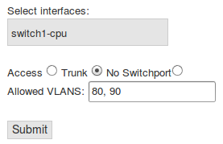

Mikrotik Switching API is a open source web project for developing VLANs easily to Mikrotik devices.
Getting Started
Instalation
To use the API a PHP server is required. It can be downloaded for free for many platforms and options: Linux: Install a LAMP (Linux, Apache, MySQL, PHP) server. Installation varies according by the distribution. Install the appropiate according the software. Windows: Wamp server Mac OS: Mamp server
Mac OS: Mamp server
Accessing to the API
Once performed the installation, make sure the platform with the web server, the Mikrotik device to be configured and the device that is going to be used to interact with the PHP server are in the same network or can reach it.
For example: LAN: PHP server (192.168.1.10/24) Mikrotik device (192.168.1.1/24) Computer to interact with PHP server (192.168.1.100/24) WAN: PHP server (192.168.1.10/24) Mikrotik device (84.120.30.50/20) Computer to interact with PHP server (192.168.1.100/24) Is recommended to access locally or through a VPN.Supported devices
PHP API can be supported by computes, mobiles and tablets which have access to the PHP server.
What's included?
+boostrap +css +highcharts +images -ACLs.php -Help.html -Login.php -Routing.php -Status.php -Switch.php -Vlans.php -datosCPU.php -datosGraficas.php -datosRouting.php -datosRules.php -datosStatus.php -datosStatusImage.php -datosSwitch.php -datosSwitchImage.php -datosVlans.php -datosVlansImage.php -routeros_api.class.php
USAGE
Login
Access page. The user has to enter the IP, user and password of the device to be connected. The server must reach the device, and the user and password must be valid. If the password is blank, left the input blank. If the server can't connect the device an error message will be displayed. Please check if the web API have permissions (Winbox - IP - Services) and the connection data is correct.
Status
Shows the status of the device and their ports. It has two parts:
Top part:
- Device status:
Displays the status of the ports.
Green port indicates that the link is running.
The green 'm' icon, indicates that the port is a master-port.
- Info Box:
Shows information of the device: model, CPU load and up-time.
- Traffic interface graph:
Displays the traffic information of the selected interface in a graph.
Red shows upload traffic.
Black shows download traffic.
- Enable/Disable ports:
Shows if the link is running or not.
Gives the option to enable/disabled the desired port.
Switch
Shows information about the commutation of the ports. It has two parts:
Top part:
- Switch status:
Displays the active ports and the color of each port depending on its switch.
The 'm' icon, indicates that the port is a master-port.
- Info Box:
Shows information of the device: model, CPU load and up-time.
- Switch Distribution:
Displays the distribution of each switch and its interfaces.
Each switch has his own color that correspond with the color of the active port in the switch status.
- Enable/Disable ports:
Gives the option to select the master-port of each switch to form new switches.
Only can be a master-port for each switching group.
VLANs
Shows information about the VLANs of each port. It has two parts:
Top part:
- VLANs status:
Displays the tag (No Switchport, Access or Trunk) of the active port depending on its configuration.
- Info Box:
Shows information of the device: model, CPU load and up-time.
- Ports Distribution:
Displays the distribution of each Port depending on Access or Trunk and its VLANs.
Gives the option to reset each Port to the default configuration.
- Form VLANs:
Gives the option to set the desired Port in mode Access, Trunk or No Switchport.
If the desired option is Access is needed to stablish the Access VLAN.
If the desired option is Trunk is needed to stablish the allowed VLAN or VLANs.
If the desired option is No Switchport an optional IP can be stablished.
Routing
Shows information about the routing of each port. It has two parts:
Top part:
- Device status:
Displays the status of the ports.
Green port indicates that the link is running.
The green 'm' icon, indicates that the port is a master-port.
- Info Box:
Shows information of the device: model, CPU load and up-time.
- Routing info:
Shows information about the VLAN interface (VLAN ID, Interface and the IP address), used to route the VLANs.
Gives the option to delete the VLAN interface and the IP Address associated.
- Form Routing:
Gives the option to create the VLAN interface to route the VLANs.
Is needed the interface by which hangs the VLAN, an ID, a name, an IP address.
Only can be a VLAN interface with the same ID, if the user want to edit it, delete and create a new one.
Also gives the option to create routes.
Is needed the destination address and the gateway.
Also shows information about the static and dynamic routes.
Gives the option to delete the desired route.
ACLs
Shows information about firewall rules. It has two parts:
Top part:
- Device status:
Displays the status of the ports.
Green port indicates that the link is running.
The green 'm' icon, indicates that the port is a master-port.
- Info Box:
Shows information of the device: model, CPU load and up-time.
- Rules creation:
Gives the option to create a firewall rules to permit/deny the traffic between VLAN interfaces.
The chain by default is 'forward' because the objective is to filter VLANs.
- Rules information:
Shows information about the firewall rules in a table: src. VLAN, action, dst.VLAN.
Examples
Example 1
Only one switch and a communication between VLANs will be established.
- 1- Check if ports are active. (Status)
- 2- Check if involved ports are in the same switch. (Switch)
- 3- Desired Ports mode Access. (VLANs)
- 4- Set 'switch-cpu' mode Trunk to allow traffic between the same Switch. (Ports) 
- 5- Give IP Address to the devices and check connection.
Example 2
Two switches and a communication between VLANs will be established through switch.
- 1- Check if ports are active. (Status)
- 2- Check if involved ports are in the same switch in each device. (Switch)
- 3- Desired Ports mode Access in each device. (Ports)
- 4- Set 'switch-cpu' and the desired port to make Trunk of each device in mode Trunk. (Ports)
- 5- Give IP Address to the devices and check connection.
Example 3
Two switches and a router.A communication between VLANs will be established through switch and the router.
Cloud Router Switch:- 1- Check if ports are active. (Status)
- 2- Check if involved ports are in the same switch in each device. (Switch)
- 3- Desired Ports mode Access in each device. (Ports)
- 4- Set 'switch-cpu' and the desired port to make Trunk of each device in mode Trunk. (Ports)
- 1- Check if ports are active. (Status)
- 2- Set interface of the desired port to make Trunk in mode Trunk.
- 3- Set a VLAN interface (name, ID and interface) and an IP Address to enroute traffic. (Routing)
- 4- Give IP Address to the devices and check connection.